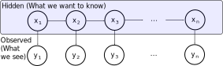
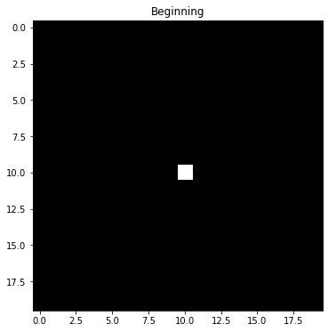
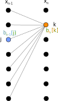

Week 6: Hidden Markov Models / Bayes Filtering / The Viterbi Algorithm
Chris Tralie
Markov Chains As Bayesian Networks
We've already seen Markov chains, where the probability of transitioning from one state to the next is completely independent of the previous states. This is known as the Markov state assumption. If we let the variable Xi represent the state that we're in at step i, then we can depict this as the following state diagram:
This is a specific instance of a more general state diagram known as a "Bayesian Network." The arrows indicate conditional dependencies. What this diagram is saying specifically is that the "joint probability" (AND) of all states in a Markov sequence can be written as follows:
\[ p(x_1, x_2, ..., x_n) = p(x_1) \times p(x_2 | x_1) \times p(x_3 | x_2) \times ... \times p(x_n | x_{n-1})\]
Notice how we only condition on the states that are at the tail of arrows, which represents the Markov assumption graphically.
Hidden Markov Models
Markov models are applicable to time sequence data that we can observe directly, like the text strings in assignment 3. However, there are plenty of time sequence scenarios where we can't observe what we actually want to know directly. For example, in a speech to text system, we observe noisy audio data over time, but we actually want to know the text string that someone is saying. Below is a table of some more examples of time sequences that have both a hidden state and an observation
Problem | Hidden State | Observation |
| Speech To Text | Text String | Noisy audio samples |
| Machine translation (e.g. German to English) |
Target Language (e.g. English) | Source Language (e.g. German) |
| Handwriting Recognition | Text string | Images of characters |
| Transcribing sheet music | Symbolic representation of a musical score | Images of sheet music (e.g. a piano roll |
| Audio beat tracking | Time series indicating when to tap the foot | Audio data of music |
| Robot Localization | Position of robot | Sensor scan of environment (e.g. video stream, laser range scanner) |
We can model problems with a hidden state and an observation using a Hidden Markov Model (HMM). Now, in addition to our sequence x1, x2, ..., xn, which is what we want to know, we also have a sequence y1, y2, ..., yn, in which we observe something at each state. The Bayes net for a hidden markov model looks like this:
In addition to the Markov state assumption, we also have the Markov observation assumption; that is, each observation yi only depends on the state xi and is independent of all other states and all other observations.
Bayes Filtering
Now that we have the HMM framework, let's start trying to do some inference on it given some measurements over time. The first problem we'll solve is known as filtering, and its goal is to estimate over time a probability distribution over all of the hidden states. As more measurements come in, we update the distribution. We can estimate where we think we are as the state which has the maximum probability given the measurements up to a particular point in time. Because we update as things are streaming in, this is referred to as an online method.
Before we dive into a formal specification of this process, let's sketch out an example for intuition. Let's suppose we have a robot on a grid as in assignment 4 that can move left/right/up/down or stay still at any time. Let's also suppose that we know with perfect certainty that it starts at the center of a square map. Below is how we would forecast the probability of being in future positions on that map if we knew nothing else, assuming that we're equally likely to stay still or move left/right/up/down:
Since we're equally likely to stay still or move left/right/up/down, we have to hedge our bets in all directions at each step. The result is that the once very certain probability "smears out" and distributes in all directions. This is pure Markov, and is referred to as the state transition step for the hidden states. However, we have also have measurements at each timestep that help us to narrow down the possible states. Let's suppose we receive noisy measurements that indicate that the robot is moving to the right. Then we can do a two step process at each timestep where we diffuse the probability in the state transitions, but then we update our forecast based on measurement. Here's how that might look in this example:
Notice how the probability density still diffuses at each transition, but the measurement helps it to sharpen around the true location. This is the power of Bayes filtering in the HMM framework: it takes into consideration both transitions of the hidden states, as well as measurement probabilities to help narrow down the states.
Now let's put on some formal notation and define exactly what it is we're looking for. Given the first n measurements, we want to figure out the probability that the hidden state xn is a particular state k at time n.
\[ f_n(k) = p(x_n = k | y_1, y_2, ..., y_n) \]
Let's consider what happens when we apply Bayes' rule within the space of intersection of all measurements that have happened before this step only: y1, y2, ..., yn-1. By Bayes' rule, we can rewrite our expression as
\[ f_n(k) = p(\boldsymbol{x_n = k | y_n}, y_1, y_2, ..., y_{n-1}) = \frac{p(\boldsymbol{y_n | x_n = k}, y_1, y_2, ..., y_{n-1}) p(\boldsymbol{x_n = k |} y_1, y_2, ..., y_{n-1})}{p(y_1, y_2, ..., y_n)} \]
By the Markov measurement assumption, measurement yn only depends on state xn and is independent of all other measurements, so we can simplify this to
\[ f_n(k) = \frac{p(y_n | x_n = k) p(x_n = k | y_1, y_2, ..., y_{n-1})}{p(y_1, y_2, ..., y_n)} \]
Now we have to tackle the second term in the numerator, p(xn | y1, y2, ..., yn-1). Actually, if we had solved something similar at the last measurement and kept track of it:
\[ f_{n-1}(j) = p(x_{n-1} = j | y_1, y_2, ..., y_{n-1}) \]
then we can make some headway here by coming up with an expression in terms of this. The key insight is that in the absence of a new measurement, p(xn | y1, y2, ..., yn-1) is simply like transitioning from xn-1 to xn by following an ordinary Markov state transition, since, by the Markov state property, the state xn only depends on xn-1. So we'll consider what happens of we transitioned from every possible state at xn-1 to xn. The picture below shows this
Since all of the possible j values at state xn-1 are disjoint, we can sum up the probabilities over all j. Let's suppose we have K unique states. Then the expression is as follows
\[ p(x_n = k | y_1, y_2, ..., y_{n-1}) = \sum_{j=1}^K f_{n-1}(j) p(x_n = k | x_{n-1} = j)\]
Plugging this back into our original expression, we have
\[ f_n(k) = \frac{p(y_n | x_n = k) \left( \sum_{j=1}^K f_{n-1}(j) p(x_n = k | x_{n-1} = j) \right)}{p(y_1, y_2, ..., y_n)} \]
This is very neat, because now we almost have a recursive expression for fn in terms of fn-1. The only thing that remains is the denominator. Actually, because xn = k is disjoint over all k, we can write the denominator as the sum of all possible numerators.
\[ f_n(k) = \frac{p(y_n | x_n = k) \left( \sum_{j=1}^K f_{n-1}(j) p(x_n = k | x_{n-1} = j) \right)}{\sum_{k = 1}^K p(y_n | x_n = k) \left( \sum_{j=1}^K f_{n-1}(j) p(x_n = k | x_{n-1} = j) \right)} \]
This is analogous to how we computed the overall probability of testing positive for covid as
\[ p(\text{positive}) = p(\text{positive} | \text{covid}) + p(\text{positive} | \text{not covid}) \]
So now, we have a complete expression for fn in terms of known measurement probabilities p(yn | xn) and transition probabilities p(xn = k | xn-1 = j), which we assume we know. This means we can continue to update a single array of probabilities over all states as we get a new measurement. The complexity of such an update is O(K) space and time, since there are K states. The pseudocode below summarizes the algorithm
Online Bayes Filtering
Given K states and T measurements, do the following steps- Initialize an array f of length K
- Let f[k] be the prior probability of starting in state k
-
for each new measurement n = 1 to T
- Initialize an array g of length K
- For each state k = 1 to K
We need to compute the probability that any sequence of states ends on state k at time n. This is the product of the measurement probability at time n and the probability that we transition to k from any of the states at time n-1. We show how to compute both of these below
- Let meas be the measurement probability at time n given that xn = k, or p(yn | xn = k)
- Set trans = 0 (this will hold the Markov transition probabilities from the previous state, accumulated over all previous states)
-
For each prior state j = 1 to K
-
trans = trans + f[j] * p(xn = k | xn-1 = j)
- Let g[k] = meas * trans
- Let σ be the sum of all elements in g. Set f[k] to be g[k]/σ
A Note on Complexity
Over all timesteps, the above algorithm uses O(K) memory to store f and the intermediate g array. On the other hand, it takes O(KT2) computation time in the worst case. This is due to the triply nested for loop; for each timestep (of which there are T) for each state (of which there are K), we have to look back at K states at the previous timestep. However, if we can limit the previous states we have to look at to a small constant, then this turns into O(KT) complexity. For instance, in the robot localization problem, we only have to consider the states that neighbor on the map and the state itself, which is at most 5.
The Viterbi Algorithm: Maximizing Joint Posterior Likelihood
NOTE: In the discussion below, argmaxj(arr) means to find the index j in the array arr that maximizes arr[j]. For instance, if we were 0-indexing an array, argmaxj [5, 8, -4, 3] would be 1
We can also use the Bayesian classification framework to figure out the joint likelihood over all of the hidden states given the observations given the observations. This will help us to avoid making mistakes in individual steps since all of the steps have to be coherent across the entire sequence. This is the reason that speech to text works really well even when peoples' speech is noisy and garbled. Since we have to have the entire sequence of measurements ahead of time, though, this is referred to as an offline method.
Let's begin to get at the math by looking at the posterior likelihood of the hidden states given all observations
\[ \ell(x_1, x_2, ... x_n | y_1, y_2, ..., y_n) = p(y_1, y_2, ..., y_n | x_1, x_2, ..., x_n) p(x_1, x_2, ..., x_n) \]
Because we still have the Markov state assumption, the second term of the joint probability of the state sequence can be written as
\[ p(x_1, x_2, ..., x_n) = p(x_1) \times p(x_2 | x_1) \times p(x_3 | x_2) \times ... \times p(x_n | x_{n-1})\]
just as before. But now we have another multiplicative term of the observations given the states. Because of the Markov observation assumption, we can write this second probability as
\[ p(y_1, y_2, ..., y_n) = p(y_1 | x_1) \times p(y_2 | x_2) \times ... \times ... \times p(y_n | x_n)\]
Putting this all together, we get the following expression for the posterior likelihood, which includes all of the same probabilities, as well as the probabilities for observations
\[ \ell(x_1, x_2, ... x_n | y_1, y_2, ..., y_n) = \left( p(x_1) \times p(x_2 | x_1) \times p(x_3 | x_2) \times ... \times p(x_n | x_{n-1}) \right) \left( p(y_1 | x_1) \times p(y_2 | x_2) \times ... \times ... \times p(y_n | x_n) \right) \]
We can also write this in log form as a sum. This important, the probability of an individual sequence will be very small, and we want to avoid numerical underflow. Abbreviating the full state sequences as x1:n and the full observation sequence as y1:n, we have
\[ \log \ell(x_{1:n} | y_{1:n}) = \log(p(x_1)) + \sum_{i = 2}^n \log(p(x_i | x_{i-1})) + \sum_{i=1}^n \log(p(y_i | x_i)) \]
Finding the most likely sequence of hidden states is akin to finding the x1:n that maximizes the above expression. This is also referred to as the maximum a posteriori estimate. Formally, it is written as
\[ \text{argmax}_{x_{1:n}} \log \ell(x_{1:n} | y_{1:n}) \]
If we had a brute force approach to solving this, how many combinations of states would we have to check? Let's suppose that we had K states and T timesteps. Then, unfortunately, we'd have to check KT different combinations of states. For example, suppose our state space was {a, b, c} and we had 4 timesteps. Then we'd have to consider the 34 = 81 sequences:
['aaaa', 'aaab', 'aaac', 'aaba', 'aabb', 'aabc', 'aaca', 'aacb', 'aacc', 'abaa', 'abab', 'abac', 'abba', 'abbb', 'abbc', 'abca', 'abcb', 'abcc', 'acaa', 'acab', 'acac', 'acba', 'acbb', 'acbc', 'acca', 'accb', 'accc', 'baaa', 'baab', 'baac', 'baba', 'babb', 'babc', 'baca', 'bacb', 'bacc', 'bbaa', 'bbab', 'bbac', 'bbba', 'bbbb', 'bbbc', 'bbca', 'bbcb', 'bbcc', 'bcaa', 'bcab', 'bcac', 'bcba', 'bcbb', 'bcbc', 'bcca', 'bccb', 'bccc', 'caaa', 'caab', 'caac', 'caba', 'cabb', 'cabc', 'caca', 'cacb', 'cacc', 'cbaa', 'cbab', 'cbac', 'cbba', 'cbbb', 'cbbc', 'cbca', 'cbcb', 'cbcc', 'ccaa', 'ccab', 'ccac', 'ccba', 'ccbb', 'ccbc', 'ccca', 'cccb', 'cccc']
This quickly grows intractable for any reasonable problem. For instance, if we're localizing a robot on a 100x100 grid, then K = 10000. Let's suppose we're measuring at 30 frames per second for 10 seconds, so T = 300. Then we'd need to check 10000300 combinations of states. This is beyond astronomical in size! So we're going to need a smarter approach.
Actually, we can do something kind of similar to Bayes filtering, except we're going to need to store a bit more information. Let's let Ln, k be the maximum log likelihood of the joint distribution over the first n states that end at state xn = k. We can think of L as holding optimal cumulative probabilities of traveling up to a certain point in time. As with Bayes filtering, we can write Ln, k in terms of maximum likelihoods one step prior in time, since every step before that is independent, as well as the measurement at time n. In particular, we have the following recurrence:
\[ L_{n, k} = \log(p(y_n | x_n = k) + \max_{j} \left( L_{n-1, j} + \log(p(x_n = k | x_{n-1} = j)) \right) \]
Or, in other words, accumulating the next step in the joint probability adds on a term for the measurement probability log(p(yn | xn = k)), as well as the transition probability log(p(xn | xn-1 = j)). So we pay a cost for how good or bad the transition is and how well the new state matches the next measurement we got. Such a recursive specification lends itself well to a bottom up dynamic programming solution, where we fill in the first row of L and then fill in each row one at a time successively. We'll also store a matrix B which remembers which state j maximized Ln, k
We start with the first row of L holding the prior probabilities and measurement probabilities only (since no measurements have happened yet).
Offline Viterbi Optimal Sequence Extraction
Given K states and T measurements, do the following steps- Initialize a T x K 2D array L and a T x K 2D array B
-
For each state k = 1 to K
- Let
\[ L_{1, k} = \log(p(x_1 = k)) + \log(p(y_1 | x_1 = k)) \]That is, we start off with the prior probabilities in each state, also integrating in the measurement probabilities at the first timestep.
-
Let
\[ B_{1, k} = -1 \]We'll use this array B to remember transitions from state to state
- Let
-
for each n = 2 to T
- For each state k = 1 to K
- Let maxj = -1. This will store the index of previous state which maximizes the cumulative probability plus the next transition probability
- Let maxval = -infinity. This will store the maximum cumulative probability plus the next transition probability
-
For each j = 1 to K
-
\[ val = L_{n-1, j} + \log(p(x_n = k | x_{n-1} = j)) \]
In other words, the probability of coming from j at the last step to k in this step, without knowledge of a new measurement, is the log probability of being at j in the last step, plus the log transition probability from state j to state k.
-
If val > maxval: (We just found a more probable transition than the best we've found so far)
- maxval = val
- maxj = j
-
-
\[ L_{n, k} = \log(p(y_n | x_n = k)) + \text{maxval} \]In other words, once we have looked over all possible transitions, we pick the one with the highest probability, and we also integrate the new measurement at this step
-
\[ B_{n, k} = \text{maxj} \]In other words, we remember which j gave us the highest probability. We'll use this later when backtracing to reconstruct a full path from start to finish.
- For each state k = 1 to K
-
Now find index of the maximum element in the last row and backtrace through B to extract the optimal path in (Note that this is similar to the backtracing that we used in our search algorithms from before).
- Let state = argmaxk LT, k. In other words, find the state that ends up with the maximum probability at the end. We will backtrace this now to the beginning of time.
- Let states = []
- Let n = T
- while n > 1
- states.push(state)
- state = Bn, state
- n = n - 1
- states.reverse()
A Note on Complexity
Like the bayes filter, this algorithm takes O(KT2) computation time in the worst case, but this can be limited to O(KT) complexity if there are a small number of possible states that can be reached from any given state. However, the memory requirements are worse at O(KT), and there's no way around this, because we need to remember enough information to backtrace a full optimal trajectory at the end. In practice, we could just store the B array and the most recently filled in row of Lm but it's still O(KT) to store the entire B array.
Going Further: Continuous State Spaces
We've covered a lot of ground through some really important algorithms here. But these algorithms will completely fail if the state space is continuous, since there are an infinite number of possible states. We can choose to discretize the space; for instance, if we were trying to do GPS localization, we could round every latitude and longitude to the 3rd decimal place. But this may not be fine enough, and we will still have tons of states, grinding our computation to a halt and blowing up memory.
To deal with large or possibly infinite state space, there are two common approaches in CS. One is to maintain a continuous distribution on all measurment probabilities, transition probabilties, and filtered probabilities. If the choice of distribution is a Gaussian, then this leads to something known as a Kalman filter. This is widely used in many localization problems (apparently my dad used to use this when working on the Landsat 7 satellite).
The problem with the Gaussian assumption, though, is that it only works for data that is "unimodal"; that is, there is only one peak in the probability distribution. In other words, there is one state which is much more likely than all of the others given a particular sequence of measurements. This doesn't work, for example, in our robot localization problem when the robot is in symmetric hallways, because there are many possible hypotheses. There is an alternative known as a particle filter that can handle such cases by approximating a continuous distribution by a collection of discrete samples. A particle filter is an instance of what's known as a "genetic algorithm." You can click here to read more about it. I wish we had time to do it in this class, because it's really cool!